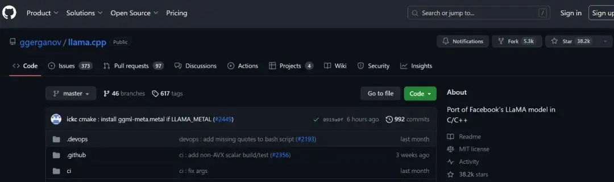
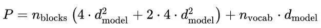
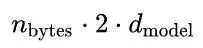
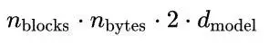
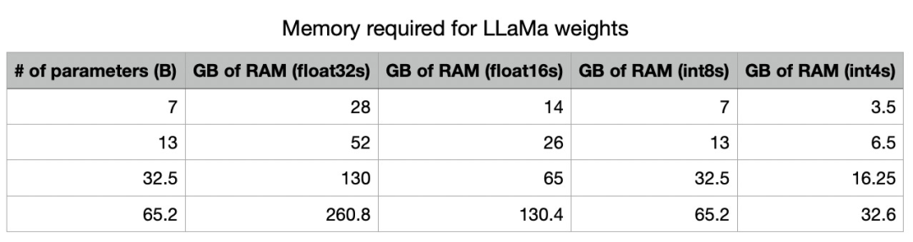
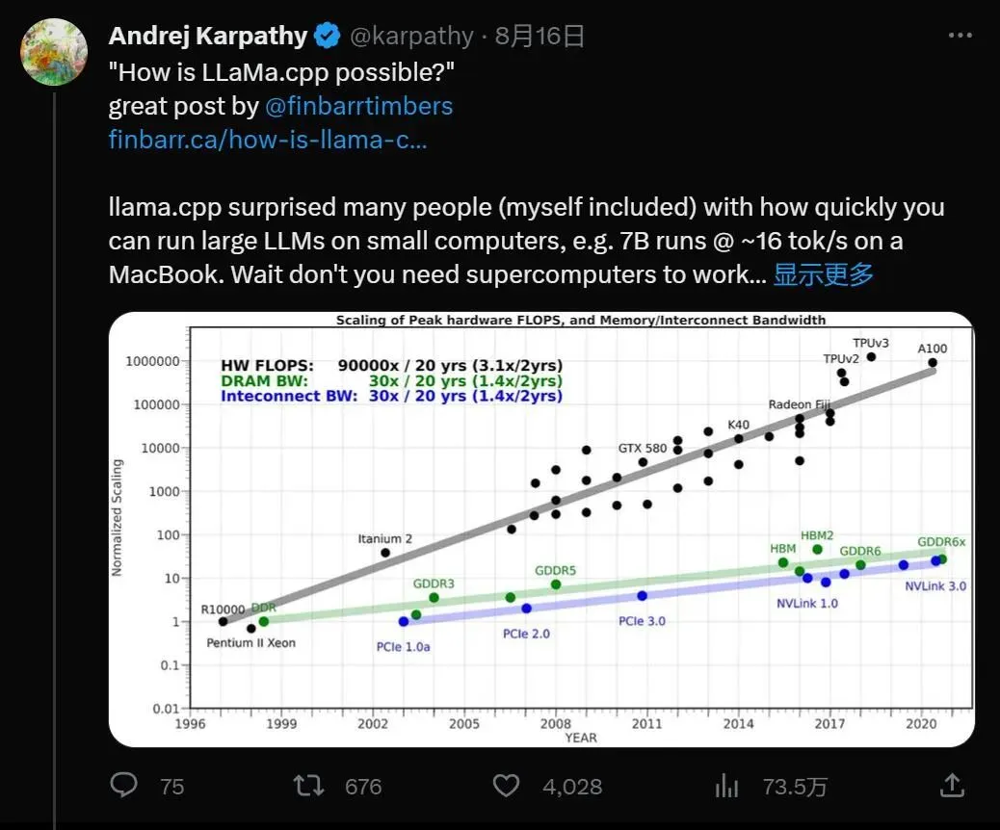
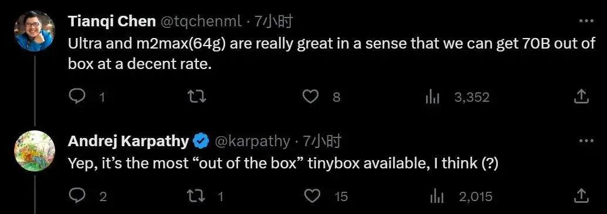

zz: 研究完llama.cpp，我发现手机跑大模型竟这么简单
转载自 研究完llama.cpp，我发现手机跑大模型竟这么简单 - 知乎 。
最近在开源社区，很多人都在探索大模型的优化方法。有一个叫 llama.cpp 的项目用原始 C++ 重写了 LLaMa 的推理代码，效果极好，获得了人们的广泛关注。
通过一些优化和量化权重，它能让我们在各种以前无法想象的硬件上本地运行 LLaMa 模型。其中：
- 在谷歌 Pixel5 手机上，它能以 1 token/s 的速度运行 7B 参数模型。
- 在 M2 芯片的 Macbook Pro 上，使用 7B 参数模型的速度约为 16 token/s
- 我们甚至于可以在 4GB RAM 的树莓派上运行 7B 模型，尽管速度只有 0.1 token/s

GitHub 链接：ggerganov/llama.cpp: Port of Facebook's LLaMA model in C/C++
我们知道，除了通用化能力，大模型落地的关键在于推理性能的优化，然而如今这个优化程度超出了我们的预料。llama.cpp 至今在 GitHub 上已经收获了 3.8 万个 Star，几乎和 LLaMa 模型本身一样多。以至于到了 6 月份，llama.cpp 的作者 Georgi Gerganov 干脆开始创业，宣布创立一家新公司 ggml.ai，旨在用纯 C 语言框架降低大模型运行成本。
很多人看到这里都会发问：这怎么可能？大语言模型不是需要英伟达 H100 之类的 GPU 才能跑的吗？为了解决这个疑惑，最近有人深入研究了围绕大模型推理的数学，并试图进行解答。
让我们从「为什么 AI 训练都需要用 GPU？」开始，GPU 对深度学习有两个主要好处：
它们具有很大的内存带宽（如 A100：1935 GB/s，RTX 4090：1008 GB/s） 它们具有很大的算力（A100：FP16 有 312 TFLOPS，RTX 4090：FP16 有 82.6 TFLOPS） 内存带宽之所以重要，是因为它关系到数据从 HBM 内存（即 RAM）移动到片上内存需要花费的时间。在实际使用 GPU 进行数学计算时，我们需要将相关矩阵移至片上内存，该内存相当小（A100 上为 40MB，而 RAM 为 40-80GB）。内存带宽比计算性能小约 2 个数量级 —— 这稍后会很重要，因为内存带宽往往是推理的瓶颈。
从计算机体系结构的角度而言，我们需要把不同速度和容量的 memory 分出层级，以追求效率和成本之间的平衡。需要频繁访问的数据放在速度最快，但又容量最小的寄存器和 L1 cache 里，访问量最少的数据放在最慢最大的内存条里。
这在 LLaMa 推理任务上意味着什么？让我们从一些推理数学计算开始。我们可以使用 Kipply 的文章（LLM Parameter Counting | kipply's blog ）对 LLM 的推理性能进行一些粗略的计算。
首先有关模型尺寸：
- Q、K 和 V 权重矩阵的形状都是 [ d_model, d_head]，每层有 n_heads；注意力输出矩阵具有相同的形状，总共 4 * [ d_model, n_heads * d_head]。按照惯例，GPT 风格的网络具有 d_head * n_heads = d_model。
- MLP 有两个权重矩阵，形状为 [d_model, 4 * d_model] 和 [4 * d_model，d_model]
- 嵌入矩阵的大小为 [d_vocab, d_model]。
这为我们提供了一个方便的类 GPT 模型参数数量方程：

在这里，我们将重点讨论在本地运行类 ChatGPT 服务的情况，这就是 llama.cpp 所做的事情，让我们假设 batch size 为 1。为了高效推理，KV 缓存必须存储在内存中；KV 缓存需要存储每一层的 KV 值，这相当于存储：

这里使用 n_bytes 来表示每个参数的字节数；对于 float32 是 4，对于 float16 是 2，以此类推。中间的 2 是因为我们必须为 K 值存储一组权重，为 V 存储一组权重。
给定一个 n 层模型，KV 缓存的总内存为：

除了将 KV 缓存存储在内存中之外，我们还需要将权重本身存储在内存中；这需要 n_bytes * P 字节。

这是量化的主要优点之一。通过使用较低的精度，我们可以从根本上减少存储模型所需的内存量。请注意，在 int4 精度下，所有这些模型都适合英伟达的 A100（也是目前数据中心里常见的 GPU）上的内存，并且除了最大的模型之外，所有这些模型都适合高端消费级 GPU（如 RTX 3090/4090，具有 24GB RAM）。
现在，当谈到实际运行推理时，每个 token 大约需要 2P FLOPS，因为我们正在使用总共 P 个参数进行一系列矩阵乘法，与之相乘的矩阵尺寸是 (m, n) 向量 ( n,)，成本为 200 mn。
完成所有数学计算后，让我们计算一下使用 LLaMa 运行推理的要求。sampling 的主要要求是：
- 除了所有参数之外，还将 KV 缓存保留在内存中。
- 将 HBM 中的所有权重读入片上存储。因为我们是自回归采样，所以我们必须对采样的每个 token 重复此操作。
- 进行实际的矩阵乘法来计算我们网络的输出。
延迟是计算延迟或内存延迟的最大值，因为在所有现代张量编程库中将参数读取到片上内存中都是异步发生的。因此，我们写道：
其中 B 是 batch size。由于内存带宽约为 1.935e12，需要的 FLOPS 量约为 3.12e14，所以只要 batch size 小于 161，模型就会受到内存限制。
当 batch size 为 1，即在计算机上仅生成单个预测流时，这是相同的等式，就像在大多数硬件（如英伟达的 GPU）上一样，当你降低精度时，会出现线性加速：使用 fp16 代替 fp32 时，FLOPS 会翻倍，转到 int 8，FLOPS 会再增加一倍，用 int4 时再次加倍。
由于 llama.cpp 使用目前深度学习推理中较为激进的 int4 格式，因此 KV 缓存的 RAM 需求减少到 1.33GB，模型参数的 VRAM 减少到 16.25GB。这看起来很不错
由于内存带宽几乎总是远小于 FLOPS 数，因此内存带宽是瓶颈所在。
请注意，FLOPS/token 的数量与所需的内存带宽相同，因为我们必须 1) 将所有参数加载到片上内存中，然后 2) 使用这些参数来计算结果。这些都是同时发生的，因为所有现代张量编程框架都能够异步处理「加载到内存」位，因此所需的总时间是 max（compute time, memory time）。
在英伟达 A100 上运行 LLaMa
在 A100 (80GB PCIe) 上，内存带宽为 1935GB/s。int4 计算量为 1248 TOPS。因此，该模型较严重地受到内存的限制。我们预计 65B 模型的速度约为 30 token/s，7B 模型的速度约为 277 token/s。
在 MacBook 上运行 LLaMa
接下来是正片了，苹果 MacBook 上常见的 M1 芯片，其 GPU 的带宽为 68.25 GB/s，而 M1 GPU 可执行高达 5.5 TFLOPS 的 fp16 计算。因此，我们预计使用 int4 的 65B 模型采样的上限为大约 1 token/s，使用 7B 模型的采样上限为 10 token/s。
由于 M2 Pro 芯片具有 200 GB/s 的带宽，而 M2 Max 具有 400 GB/s 的带宽，因此我们应该期待它们在这里可以获得巨大的性能提升，使用 65B 版模型时 M2 Max 可以达到 6 token/s。这对于笔记本电脑来说已经很不错了。
在树莓派 4 上运行 LLaMa
Raspberry Pi 4 具有 13.5 GFLOPS 的计算能力和约 4GB/s 的内存带宽。鉴于此，如果 7B 模型受内存限制，我们预计会看到大约 2 token/s 的推理速度。然而我们目前看到的是约 0.1 token/s，有理由怀疑这实际上是因为算力受限导致的。这个尝试是在不知道硬件性能的条件下进行的 —— 我们无法找到有关 Raspberry Pi 低精度运算规格的足够信息来确定这一点。
总结
内存带宽几乎是与 transformer 采样相关的最大限制因素。任何降低这些模型内存需求的方法都会使它们更容易提供服务 —— 比如量化！这是蒸馏（或者只是长时间训练较小的模型）非常重要的另一个原因。
OpenAI 科学家 Andrej Karpathy 对于这个观察进行了进一步解释。

他表示：除了并行推理和训练之外，提示编码即使在 batch_size = 1 时也是可并行的，因为提示标记可以由 LLM 并行编码，而不是一一串行解码。随着提示越来越长，MacBook 的推理性能就会越落后于 A100。
但另一方面，苹果的 M2 芯片看起来在大模型的推理任务上展示了强大的实力。「因此，M2 Ultra 是当今体量最小、最漂亮、开箱即用、最简单、最强大的个人 LLM 节点。」
陈天奇也对这种观点表示赞同。

当然这一切并不是免费的午餐。从本质上讲，使用低精度会损失一些准确性，并且可能会出现一些奇怪的答案，让大模型的回应偏离轨道或产生幻觉。不过随着模型参数越多，质量损失就越低。因此，对于非常大的模型体量，差异或许可以忽略不计。此外，这只是推理成本。训练就完全是另一回事了。
通过对于各种性能参数的权衡，或许我们很快就会真正拥有更加「智能」的设备。
参考内容
- https://finbarrtimbers.substack.com/p/how-is-llamacpp-possible
- Andrej Karpathy on X: ""How is LLaMa.cpp possible?" great post by @finbarrtimbers
- How is LLaMa.cpp possible?